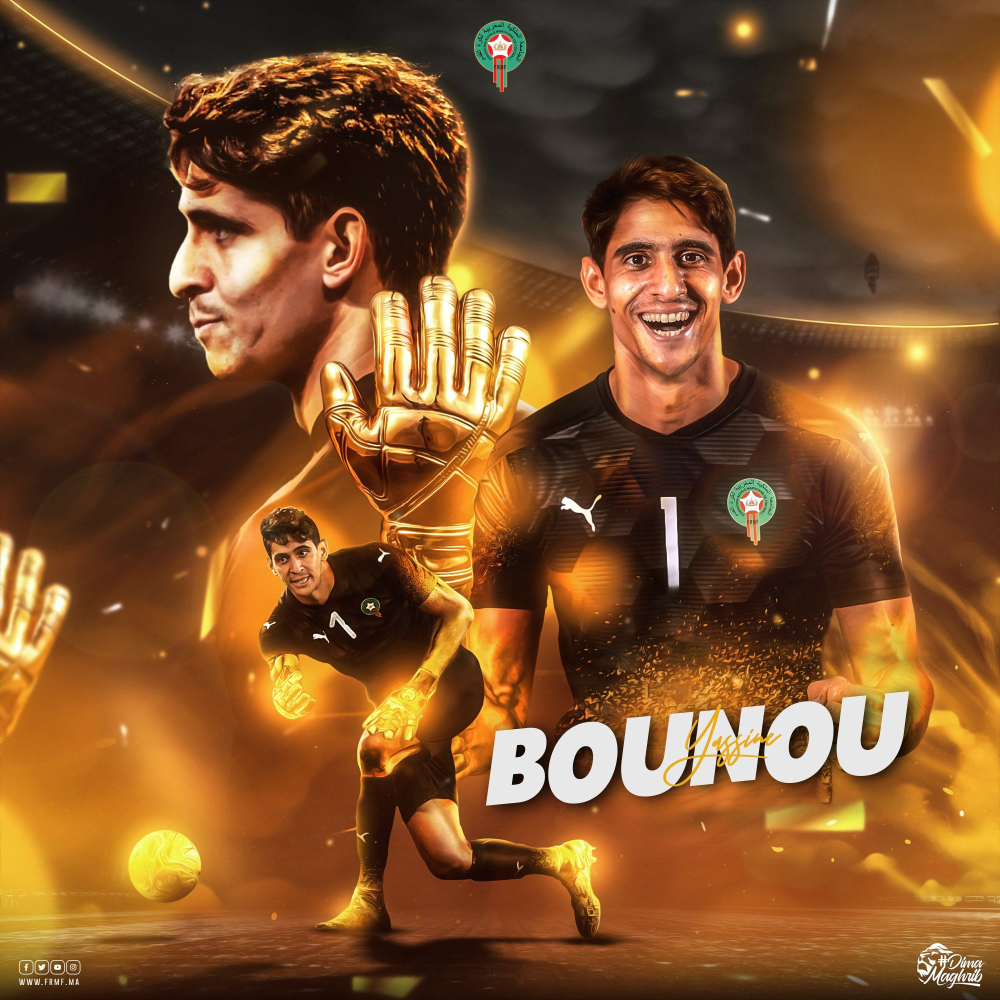
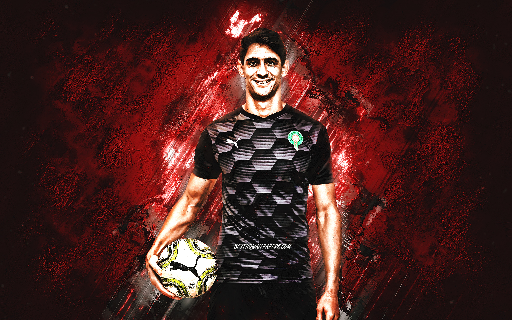
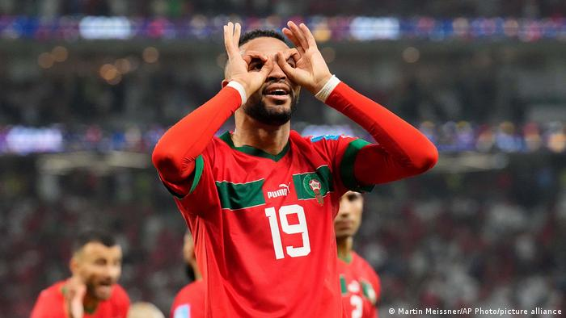
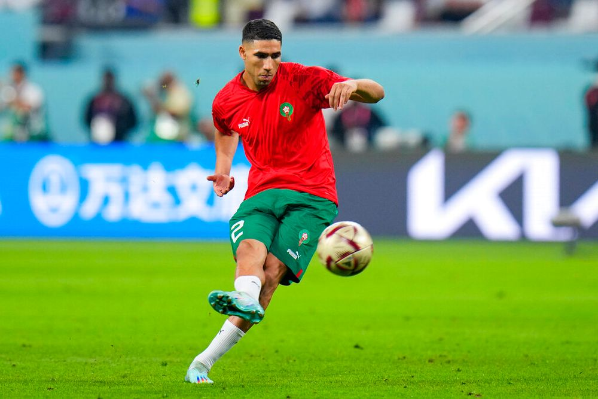
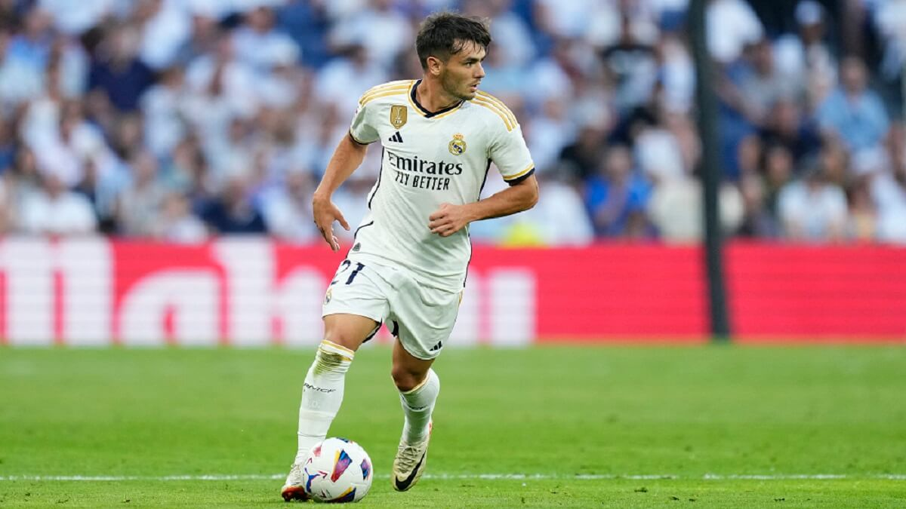
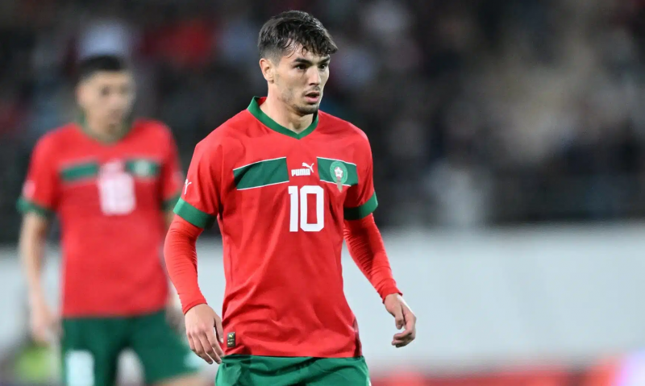
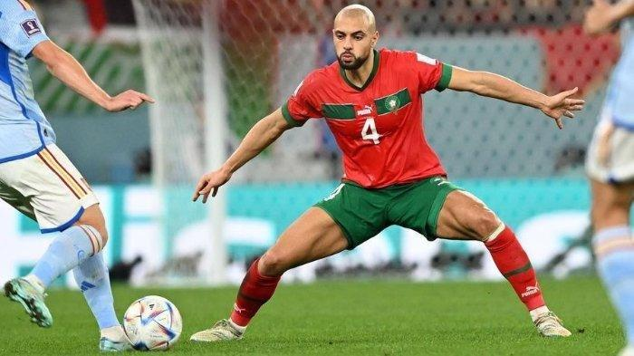
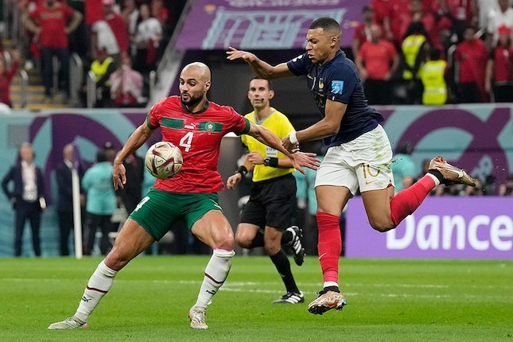

Futbol oyunlarını yerel ve uluslararası düzeyde takip etmiyorum ve başka bir
takımı tutmuyorum. Bunun nedeni, ilgimin özellikle FIFA Dünya Kupası'na yoğunlaşmış olmasıdır.
Her dört yılda bir düzenlenen bu büyük etkinlikte, Fas milli takımını desteklemek için büyük bir tutkuya sahibim.
Fas milli takımının maçlarını yakından takip ediyor ve performanslarıyla ilgileniyorum. Bu tutku, benim için özel bir ritüel haline gelmiş durumda
ve heyecanla her maçlarını bekliyorum.
Bu yüzden bu sayfada Fas milli takımı hakkında yazacağım.
Fas Millî Futbol Takımı
Fas Millî Takımı, CAF (Afrika Futbol Konfederasyonu) üyesi ve Afrika'da önemli bir futbol takımı olarak biliniyor.
Fas Millî Takımı, Afrika Uluslar Kupası gibi büyük turnuvalarda önemli maçlar oynuyor.
Ayrıca FIFA Dünya Kupası elemelerinde de Fas Millî Takımı önemli maçlar oynuyor ve Dünya Kupası finallerine katılmak için mücadele ediyor.
İspanya karşısında kazanarak çeyrek finale yükselmeleri ,
ardından büyük bir mücadele ve zorlu bir maç sonrasında Fas'ı temsil eden ekip, çeyrek finaldeki zaferiyle adını tarihe yazdırdı. Bu büyük
başarıda en çok katkı sağlayan isimlerden biri ise hiç şüphesiz ki Yasin Bounou oldu.
Yasin Bounou, kaleciliğiyle, olağanüstü refleksleri ve dikkat çekici kurtarışlarıyla Fas Millî Takımı'nın savunma hattının kilit taşlarından biri haline geldi. Onun kararlılığı ve
performansı, takımının ilerlemesinde kritik bir rol oynadı. Her maçta sahada kalan enerjisi ve liderlik vasıfları, takım arkadaşlarına güven verdi ve onları motive etti.
Ancak, Yasin Bounou'nun katkısı sadece saha içinde değil, saha dışında da büyük önem taşıyor. Kendisi,
örnek bir profesyonellik sergileyerek genç futbolculara ilham kaynağı oluyor ve Fas futbolunun geleceğine katkı sağlıyor.

Fas'ın en iyi uluslararası başarısı 2022 Dünya Kupası'nda elde edildi; burada Fas,
Hırvatistan'la golsüz berabere kaldıktan sonra Belçika, Hırvatistan ve Kanada'nın önünde
lider grupta yer aldığı Dünya Kupası yarı finallerine ulaşan ilk Afrika takımı oldu. Belçika'yı 2-0 ve Kanada'yı 2-1
yendi. Sekizinci turda İspanya'yı penaltılarda 3-0, çeyrek finalde ise Portekiz'i 1-0 yendi. Böylece, 1930'da ABD ve
2002'de düzenlediği Güney Kore'den sonra bu tura katılmaya hak kazanan üçüncü Avrupalı olmayan veya Güney Amerika takımı oldu.

2022 FIFA Dünya Kupası'nda Portekiz'i 1-0 galibiyetle kupadan eleyip tarihte ilk defa yarı finale çıkan Afrika takımı unvanını elde etmiştir.
Atlas Lions, Nisan 1998'de FIFA dünya sıralamasında onuncu sırada yer
aldığında en iyi Afrika milli futbol takımı olarak kabul edildi ve tarihte FIFA tarafından dünyanın
en iyi on milli futbol takımı arasında gösterilen ilk Afrika takımı oldu. Aynı zamanda, FIFA tarafından
1997'den 1999'a kadar üç yıl üst üste kıtadaki FIFA Dünya Sıralamasında en üst sıralarda yer
alan tarihteki tek Afrika takımıdır. Aralık 2022 itibarıyla Fas, dünya sıralamasında 11. sırada yer almaktadır.

Spor başarıları ve teknik analizlerin ötesinde, Fas'ın genç futbolcularının sunduğu büyük bir insan hikayesi var.
Bu hikaye, kendi üzerine çıkma ve vatana değer katma yeteneği üzerine kurulu. Basit ve orta gelirli Fas ailelerinin çocukları,
kör taşlar arasında bir yol açarak, yoksulluğun zincirlerini kırdılar ve Faslılara ve onlarla hissedenlere,
özgüvenle ve gelecek umuduyla bağlılık duygusu vererek kendilerine inandırdılar.
Faslıların çocukları ve onların liderleri ve kurumları yanında, Katar'daki Dünya Kupası'ndaki Fas hikayesi,
göçmenlik ve ayrılıkla mücadele eden Faslıların bir tablosunu da sunuyor. Fas aileleri, çocuklarının geçim kaynağı ve
daha iyi bir gelecek arayışıyla Avrupa'ya göç etti. Bu gençlerin potansiyelleri patladı ve futbol oyununda yıldız haline
geldiler, ancak Avrupa vatandaşları olarak doğmalarına rağmen Faslı kaldılar.
Bu gençler, yerleştikleri ülkelerin kültürlerine açıldılar ve dilini öğrendiler.
Takmın Önemli Oyuncuları
yasin Bounou

yasin Bounou (5 Nisan 1991 doğumlu), Suudi Arabistan Profesyonel Ligi'nde Al Hilal
kulübünde kaleci olarak oynayan profesyonel bir Faslı futbolcudur.
Bounou, futbol kariyerine Fas'ta başladı ve Wydad Casablanca kulübünde oynadı.
Profesyonel yaşamının büyük bir kısmını İspanya'da geçirdi, Girona ve Sevilla gibi kulüplerde
İspanyol La Liga'sında 150'den fazla maça çıktı ve İspanyol ikinci ligine ait 50'den fazla maça çıktı.
Sevilla ile, İspanyol La Liga'sında en iyi kaleci ödülü olan Zamora Ödülü'nü kazandı ve bu, kulüp tarihinde
bir ilk oldu.
Aralık 2021'de, Faslı milli kaleci Yasin Bounou, İspanyol kulübü Sevilla'da en çok
temiz kapanan kaleci olarak 2021 Avrupa sıralamasında zirveye yerleşti. Bounou, kulübü ve milli takımıyla oynadığı 59 maçın
32'sinde kalesini temiz tutarak, Avrupa'nın farklı liglerindeki tüm kalecileri geride bıraktı.

Youssef En-Nesyri
Youssef En-Nesyri, 1 Haziran 1997'de Fas'ın Fas kentinde doğdu. Kariyerine Fas'ın Fes şehrindeki Fas kulübünde başladı.
Fes, Fas'ın en prestijli kulüplerinden biridir. 2011 yılında, o zamanlar akademiyi yöneten Fransız-Marokan antrenör Nasser
Larguet'in dikkatini çeken başlıca özellikleri olan kafa vuruşları,
şutları ve fiziksel yetenekleri nedeniyle Mohamed VI Akademisi'ne katıldı.

10 Kasım 2022'de, Youssef En-Nesyri, Fas'ın 2022 Katar Dünya Kupası için 23 kişilik kadrosuna seçildi.
10 Aralık'ta, Portekiz'e karşı oynanan çeyrek final maçında En-Nesyri, Fas'ı yarı finale taşıyan tek golü kaydetti.
Bu, bir Afrika ve Arap ülkesinin Dünya Kupası'nda yarı finale yükseldiği ilk kez oldu.

Achraf Hakimi
Achraf Hakimi (4 Kasım 1998 doğumlu), Fransız Ligue 1'de Paris Saint-Germain forması giyen Faslı bir futbolcudur.
Ayrıca Fas milli takımında da oynamaktadır. Genellikle sağ bek pozisyonunda oynayan Hakimi, sol bek ve kanat pozisyonlarında
da oynayabilir. Dünyanın en iyi sağ beklerinden biri olarak kabul edilmektedir. İlk maçını 29 Temmuz 2016'da,
Real Madrid'in Paris Saint-Germain ile Amerika Birleşik Devletleri'ndeki kamp döneminde oynadığı bir dostluk maçında
Real Madrid'in A takımıyla oynadı. 6 Temmuz 2021'de,
70 milyon avroluk bir anlaşma ile Paris Saint-Germain kulübüyle 2026 yılına kadar sözleşme imzaladı.

Hakim Ziyech
Hakim Ziyech (19 Mart 1993 doğumlu), Faslı bir profesyonel futbolcudur.
Şu anda Türkiye Süper Lig takımlarından Galatasaray'da sağ kanat pozisyonunda Chelsea'den kiralık
olarak oynamaktadır. Ayrıca Fas milli futbol takımında da yer almaktadır. Orta saha pozisyonunda da
oynayabilen çok yönlü bir oyuncudur. Ziyech, bitiriciliği, top sürme yeteneği, hızı ve taktiksel zekası ile
tanınır, ayrıca duran toplardaki ustalığıyla da öne çıkar. Kendisine "Büyücü" lakabı verilmiştir, bu lakap önceki
kulübü Ajax'ın taraftarları tarafından verilmiştir.

İbrahim Abdülkadir Diaz
İbrahim Abdülkadir Diaz( 3 Ağustos 1999 doğumlu)
Faslı bir futbolcudur ve İspanya'nın Malaga şehrinde doğmuştur. Babası Faslı, annesi İspanyol'dur.
İspanyol La Liga'da Real Madrid'de orta saha oyuncusu olarak oynamaktadır. Daha önce İngiliz kulübü Manchester
City ve İtalyan kulübü AC Milan'da da oynamıştır. Fas millî takımında da oynamaktadır.

10 Mart 2024 tarihinde İspanyol Marca gazetesi, İbrahim'in Fas
Kraliyet Futbol Federasyonu'na resmi olarak İspanya yerine Fas'ı temsil etme
niyetini bildirdiğini belirtti. Ve 13 Mart 2024 tarihinde, İbrahim Fas millî takımı
teknik direktörü Walid Regragui tarafından Angola ve Moritanya millî takımlarıyla yapılacak
hazırlık maçları için çağrıldı. İbrahim, Fas millî takımı formasıyla ilk hazırlık maçına 22 Mart 2024
Cuma günü çıktı ve Fas millî takımı Angola'yı konuk ederek kazandı.

Sofyan Amrabat
Sofyan Amrabat (21 Ağustos 1996 doğumlu) Faslı bir futbolcudur ve İngiliz kulübü Manchester United'da orta saha
pozisyonunda oynamaktadır. Ayrıca Fas millî takımında da yer almaktadır.
28 Mart 2017'de, Amrabat, Fas millî takımıyla ilk kez hazırlık maçında sahaya
çıktı ve Tunus millî takımını 1-0 yendiler. Mayıs 2018'de, Rusya'da düzenlenen 2018
FIFA Dünya Kupası için Fas'ın 23 kişilik kadrosuna seçildi. 10 Kasım 2022'de, Katar'da düzenlenen
2022 FIFA Dünya Kupası için Fas'ın 26 kişilik kadrosuna seçildi. 6 Aralık 2022'de, İspanya'ya karşı
güçlü bir performans sergiledi, topu tehlikeli pozisyonlarda tuttu ve onları Dünya Kupası'ndan çıkarmak
için önemli müdahaleler yaptı, bu da Avrupa genelinde hizmetlerine olan ilgiyi artırdı.

Amrabat Hollanda'da doğdu ve 2010'da gençler düzeyinde Hollanda millî takımını temsil
etti, ancak 2013'te Fas'a geçti. İlk kez 2017'de Fas millî takımıyla sahaya çıktı ve o
zamandan beri ülkesini FIFA Dünya Kupası ve Afrika Uluslar Kupası'nda bir kez temsil etti.
